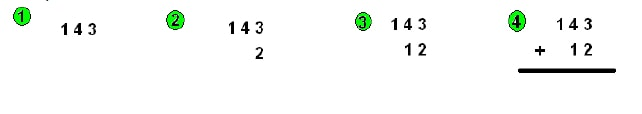
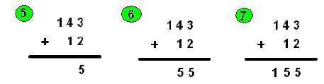
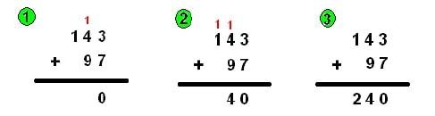
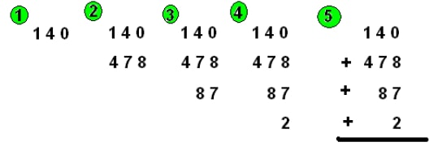
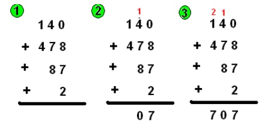

Quand tu dois additionner deux nombres, il faut que tu les poses de la manière suivante : écris le
premier nombre, va à la ligne et aligne chaque chiffre du deuxième nombre avec ceux du premier
nombre, de la droite vers la gauche. Ensuite, il ne te restes plus qu’à écrire le + et à tracer un trait !
Exemple : 143 + 12

Ensuite, il te faut résoudre cette addition. Pour cela, tu vas ajouter les deux chiffres de chaque
colonne, en allant de la droite vers la gauche.
Dans l’exemple, dans la première colonne on additionne 3 + 2 qui fait 5. Tu places le 5 en dessous du
trait dans la même colonne que le 3 et le 2. Ensuite, on passe à la deuxième colonne et on additionne
4 + 1. 4 + 1 = 5, donc tu places le 5 en dessous du trait, dans la même colonne que le 4 et le 1.
Enfin,
il faut additionner les chiffres de la troisième colonne, ce qui fait 1. Il te reste plus qu’à écrire le 1 en
dessous du trait dans la troisième colonne. Le résultat de 143 + 12 est donc 155.

Des fois, la somme des chiffres d’une colonne est égale ou supérieure à 10. Dans ce cas on écrit en
dessous du trait le dernier chiffre du résultat (celui à droite) et on met le premier chiffre (celui à
gauche) en retenue. La retenue se met en haut de la colonne suivante. Il ne faudra pas oublier de
l’ajouter à la somme obtenue dans la colonne.
E xemple : 143 + 97. Dans la première colonne on fait 3 + 7 = 10. On pose le 0 en dessous du trait et
on met la retenue en haut de la deuxième colonne. Dans la deuxième colonne on fait 4 + 9 = 13 et on
ajoute la retenue soit 13 + 1 = 14. On pose le 4, en dessous du trait et on retient 1. On marque la
retenue en haut de la troisième colonne. On fait ensuite 1 + la retenue soit 1 + 1 = 2 et on pose le 2.
Le résultat de 143 + 97 est donc 240.

Quand tu as à calculer l’addition de plus de deux opérandes, il faut poser tous les nombres à
additionner les uns en dessous des autres, en prenant soin de bien aligner chaque chiffre de chaque
nombre, de la droite vers la gauche.
-Exemple:
Voici l’addition : 140 + 478 + 87 + 2. Elle a quatre opérandes. Il faut la poser comme suit :

Ensuite, pour la calculer, le principe est le même que pour l’addition à deux opérandes.
Dans la première colonne 0 + 8 + 7 + 2 = 17. Je pose 7 et je retiens 1. Dans la deuxième colonne, 4 +
7 + 8 = 19, 19 + la retenue = 19 + 1 = 20. Je pose donc 0 et je retiens 2. Dans la troisième colonne, 1
+ 4 = 5, 5 + la retenue = 5 + 2 =7. Je pose 7. Le résultat de 140 + 478 + 87 + 2 = 707.
